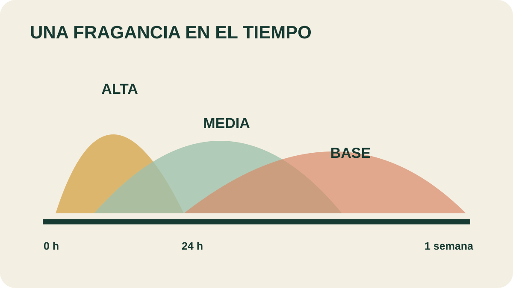

Módulo 25 · 25 minutos
Notas altas, medias y base: construir una fragancia
Al terminar, vas a poder clasificar aceites por su nota y construir una mezcla aromática equilibrada.
Lo primero que llega no es lo último que queda
Destapás un frasco y aparece una impresión inmediata. Seis horas después la mezcla huele distinta; al día siguiente, otra capa ocupa el centro. Una fragancia no es una foto, sino una secuencia. Las notas permiten diseñar esa evolución.
Clasificar por permanencia
Las notas altas, medias y base se distinguen por cuánto dura su fragancia natural, no solo por su intensidad. Algunos aceites pueden ocupar más de una categoría, pero todos se vinculan al menos con una.
La prueba indicada utiliza algodón limpio e inodoro, una habitación cerrada entre 18 y 19 °C y observaciones cada seis horas durante un día. Registrar intensidad y transformación permite comparar sin depender de una única impresión.
La entrada: notas altas
Las son penetrantes, intensas y rápidas. Su influencia mayor ocurre al comienzo. Por su potencia suelen incorporarse con menos gotas, con excepciones como limón y petitgrain señaladas por el material.
El cuerpo: notas medias
Las suelen constituir hasta 50 % de la mezcla. Actúan como ecualizadores: moderan o integran la actividad de otras notas y ofrecen fragancias generalmente agradables.
Un no borra los extremos; permite que la entrada y el fondo formen una historia continua.
El fondo: notas base
Las no siempre impresionan al primer contacto. Con el paso del tiempo pueden volverse muy fuertes y sostener la mezcla cuando las notas más volátiles ya desaparecieron.

Escuchá la mezcla con los ojos
Recorré 0, 6 y 24 horas hasta llegar a una semana. ¿Qué nota domina cada tramo? Explicá por qué una base puede parecer discreta al principio y volverse decisiva después.
Una fórmula como relato
Una mezcla de tres aceites puede asignar una función a cada componente: abrir, unir y sostener. La nota alta lleva menos gotas por su impacto inicial; la media construye el volumen principal; la base agrega profundidad.
Las proporciones no reemplazan la prueba olfativa. Se formula, se registra y se vuelve a oler en distintos momentos. La convierte el tiempo en una variable de diseño.
Actividad · Diseñar entrada, cuerpo y fondo
Elegí tres aceites del repertorio del curso y asignales una nota. Distribuí diez partes totales entre ellos, usando menos para la nota alta y más para la media. Justificá qué aparece primero, qué integra la mezcla y qué debería permanecer.
La mezcla ya tiene arquitectura
Ahora debe encontrar un formato. La misma composición cambia por completo si se transforma en perfume, brisa ambiental, popurrí, baño o preparación cosmética para manos.
Guardá esta estación
Cuando puedas explicar la idea central con tus propias palabras, marcá el módulo como completado.